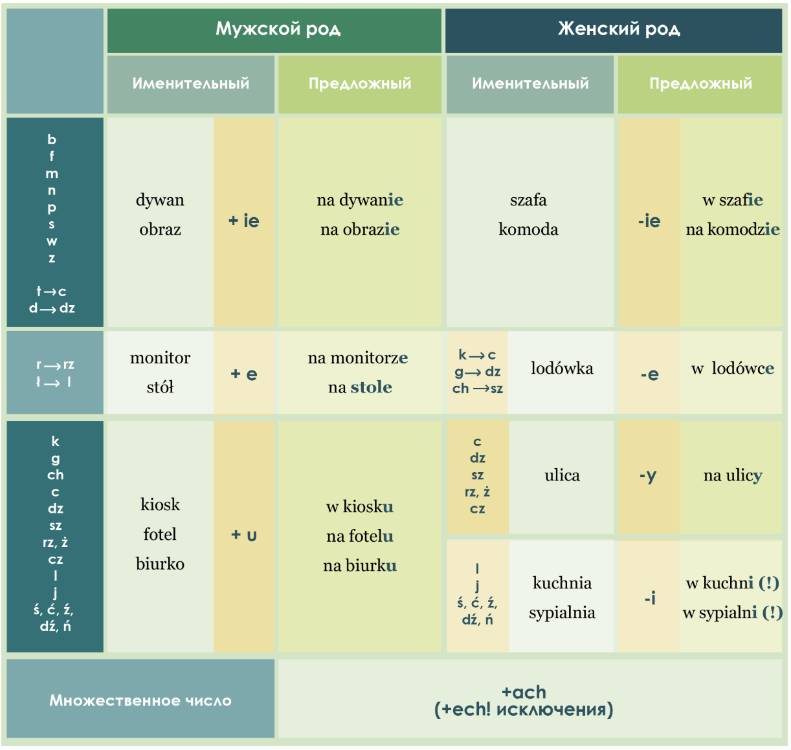
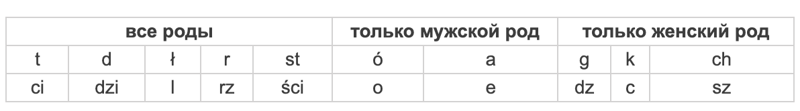

📘 Miejscownik – предложный падеж
VI przypadek
O kim? O czym? W kim? W czym? Na kim? Na czym? Przy kim? Przy czym? Po kim? Po czym?
MIEJSCOWNIK LICZBY POJEDYNCZEJ
MIEJSCOWNIK LICZBY MNOGIEJ
MIEJSCOWNIK LICZBY POJEDYNCZEJ


🧭 Когда используется?
-
Только после предлогов!
- o, w, na, po, przy
Примеры:
- w szkole — в школе
- o chłopie — о парне
- na ulicy — на улице
- w kinie — в кино

Примеры:
- dywan – na dywanie – Stół stoi na dywanie.
- obraz –na obrazie – Na obrazie jest kobieta.
- szafa– w szafie – W szafie wisi płaszcz.
- biurko – na biurku – Na biurku leżą książki.
- ulica – na ulicy – Na ulicy stoją samochody.
- sala – w sali – W sali jest lekcja.
- szafy – w szafach – Ubrania są w szafach.
- drzwi – przy drzwiach – Fotel stoi przy drzwiach.
Предложный падеж отвечает на вопрос, где что-то или кто-то находится, а также о чем или о ком говорим или думаем. При образовании предложного падежа во множественном числе окончание зависит от последней буквы существительного. Во множественном числе для всех родов используется окончание – ach (посмотрите исключения в таблице).
В польском языке при склонении существительных часто выступают чередования согласных и гласных. Постарайтесь запомнить эти примеры:

Примеры:
- parapet – Kwiaty stoją na parapecie.
- szuflada – Album leży w szufladzie.
- stół – Szklanki stoją na stole.
- monitor – Myszka jest przy monitorze.
- miasto – Mam apartament na Starym Mieście.
- las – Dom mojej babci znajduje się w lesie.
- podłoga – Stół i krzesła stoją na podłodze.
- półka – książki stoją na półce.
- poducha – Śpię na dużej podusze.
📘 Miejscownik liczby mnogiej
VI przypadek
O kim? O czym? W kim? W czym? Na kim? Na czym? Przy kim? Przy czym? Po kim? Po czym?